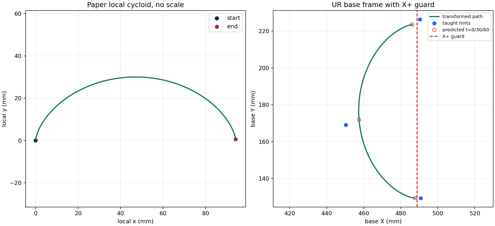

论文 cycloid 只做 rotation + translation；三点是 hint，不是路径约束；不缩放。
rotation: 90.617984 deg; x_minus_shift: 0.000 mm; max(base_x): 0.487795411 m; guard: 0.488878434 m.

| point | residual X mm | residual Y mm | norm mm |
|---|---|---|---|
| start | 3.083 | 0.007 | 3.083 |
| mid | -7.210 | -2.851 | 7.754 |
| end | 4.127 | 2.845 | 5.013 |